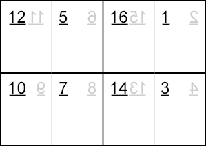
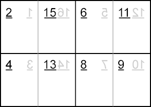
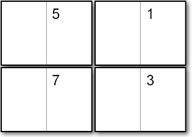
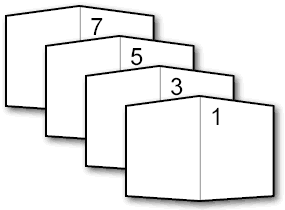

CAPTION 2002
CAPTION :: 2002 :: Making Minicomics ::
This recipe makes a minicomic in A7 format (74 mm×105 mm before trimming) with sixteen pages (including the front and back covers).
If you like you can trim it a little more to make credit-card sized (officially 85·60 mm × 53·98 mm).
Break down your story in to 16 pages. Remember that page 1 is the front cover, and you will probably want to reserve page 16 the back cover. That leaves 14 pages for story.
Start with two A4 pieces of paper. These correspond to the two sides of the printed page. Fold each once lengthways and twice widthways to divide them in to eight panels (or mark out the divisions in pencil). Draw the pages of your story in the following order:
| Side A | Side B |
|---|---|
|  |  |
The grey reversed figures show the corresponding page on the other side.
One double-sided A4 copy makes one minicomic. Nowadays copy shops have machines that can be shown both sides of the page and then print double-sided copies automatically and so we let them handle everything. In the olden days we did this by making copies of one side, then using the copies to fill the paper drawer in order to print the other side (or using the manual-feed tray, depending on the machine). Generally we had to make a few trial copies to get the second side the right way up...
The printed pages need to be sliced in to quarters:

One very useful piece of equipment for the small presser: a small office guillotine. We have one that tucks underneath the bookshelf. The alternative is a cutting mat, craft knife, and a metal ruler, but it is harder to make tidy edges this way.
You now have four piles of bits of paper, each containing four pages of the final comic. All that remains is gathering one from each pile and stapling them together in the right order.

A single staple in the spine should suffice. With comics this small, a standard desktop stapler should be big enough.
Because the cutting up of the pages happens before the stapling, you will inevitably end up with a slightly uneven edge to the pages. You can fix this by guillotining the outside edges of the stapled mini to make them neater. There is a clever method which avoids having to do two lots of cutting by folding before stapling instead of cutting.